🎯 Objetivos de aprendizaje
- Aplicar la ecuación fundamental de la hidrostática \(p = p_0 + \rho g h\).
- Aplicar el principio de Arquímedes y calcular el empuje sobre un cuerpo sumergido.
- Aplicar el principio de Pascal al cálculo de prensas hidráulicas (\(F_1/S_1 = F_2/S_2\)).
- Aplicar la ecuación de continuidad \(Q = A\cdot v = \text{cte}\) en conducciones.
- Aplicar la ecuación de Bernoulli en sus tres términos (cinético, piezométrico y geodésico).
- Analizar el efecto Venturi y calcular caudales con manómetro diferencial.
- Identificar componentes de un sistema oleohidráulico y distinguir bombas de turbinas.
Las tres propiedades fundamentales en hidrostática: densidad, peso específico y presión.
La densidad es la masa por unidad de volumen de una sustancia.
Agua: ρ = 1 000 kg/m³ · Mercurio: ρ = 13 600 kg/m³
La densidad relativa es la relación entre la densidad de una sustancia y la densidad de un fluido de referencia, normalmente agua.
Adimensional. Referencia habitual: agua (1 000 kg/m³). Mercurio: \(\rho_{rel} = 13{,}6\)
El peso específico es el peso por unidad de volumen de un fluido.
g = 9,81 m/s² · Agua: γ = 9 810 N/m³
F: fuerza perpendicular (N) · A: área (m²)
En un fluido en reposo la presión aumenta con la profundidad debido al peso de la columna de fluido superior.
\(p\): presión absoluta (Pa) · \(p_0\): presión en superficie (Pa), habitualmente \(p_{atm}\)
\(\rho g h = \gamma h\): presión hidrostática · \(h\): profundidad desde la superficie libre (m)
La presión en el agua no depende de la cantidad total de agua ni de la forma del recipiente, sino de la profundidad. Por eso un buzo a 20 m de profundidad soporta aproximadamente la presión atmosférica de la superficie más la presión hidrostática del agua.
Como en el agua cada 10 m de profundidad aumentan aproximadamente 1 bar, un buzo a 20 m soporta unos 3 bar de presión absoluta: 1 bar de la atmósfera + 2 bar del agua.
Todo cuerpo sumergido en un fluido experimenta una fuerza vertical y hacia arriba llamada empuje. Esta fuerza aparece porque la presión es mayor en la parte inferior del cuerpo que en la superior.
El principio de Arquímedes explica la flotación de barcos, el funcionamiento de hidrómetros y el concepto de peso aparente. Aparece en problemas que combinan densidades, volumen sumergido y equilibrio vertical.
El empuje es igual al peso del fluido desalojado por la parte sumergida del cuerpo.
\(\rho_f\): densidad del fluido. Si el cuerpo está totalmente sumergido, el volumen sumergido coincide con el volumen del cuerpo.
Dentro del fluido el cuerpo “parece pesar menos” porque el empuje contrarresta parte de su peso real.
Si \(E > P\) el cuerpo asciende; si \(E = P\) flota en equilibrio; si \(E < P\) se hunde.
Un cuerpo de volumen 0,01 m³ se sumerge totalmente en agua. El empuje vale:
Ese valor es la fuerza vertical ascendente que ejerce el agua sobre el cuerpo.
La presión aplicada a un fluido confinado se transmite íntegramente en todas las direcciones. Es la base de todos los sistemas hidráulicos: prensas, frenos, elevadores y gatos.
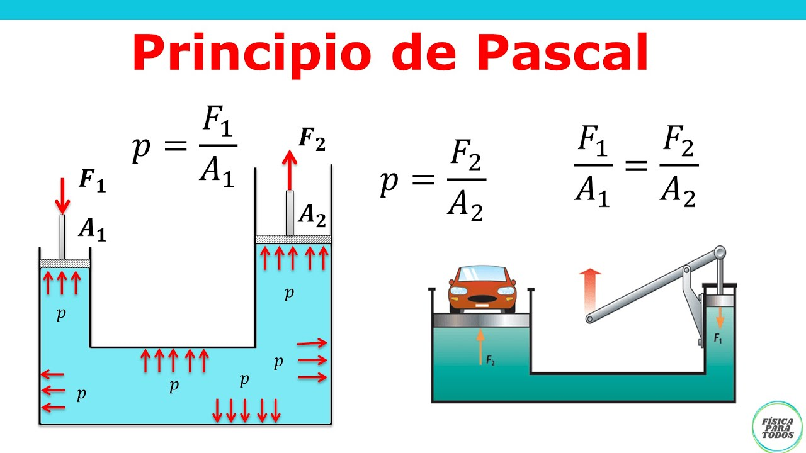
Si \(A_2 > A_1\) → \(F_2 > F_1\): la prensa amplifica la fuerza en proporción \(A_2/A_1\).
\(h_1\), \(h_2\): desplazamientos de los émbolos. Si \(A_2 \gg A_1\), el émbolo grande sube muy poco.
En vasos comunicantes con el mismo líquido, la superficie libre alcanza la misma altura en todos los recipientes.
Con líquidos de distinta densidad, las alturas en equilibrio son diferentes: el más denso queda más bajo.
La hidrodinámica estudia fluidos en movimiento bajo hipótesis de flujo ideal: no viscoso, estable e incompresible.
El caudal es el volumen de fluido que atraviesa una sección por unidad de tiempo.
A: área de la sección transversal (m²) · v: velocidad media (m/s)
En un fluido incompresible el caudal se mantiene constante en todas las secciones del conducto.
Si \(A_2 < A_1\) → \(v_2 > v_1\) (al estrechar, el fluido acelera). Si \(A_2 > A_1\) → \(v_2 < v_1\) (al ensanchar, frena).
La ecuación de Bernoulli expresa la conservación de la energía mecánica de un fluido ideal en movimiento. No es una fórmula aislada: resume cómo se reparte la energía entre presión, velocidad y altura a lo largo de una misma línea de corriente.
Aclaración importante: la ecuación de Bernoulli se aplica a lo largo de una línea de corriente de un fluido ideal. No tiene por qué tratarse estrictamente de una tubería; también puede aplicarse a chorros libres, depósitos abiertos o salidas a la atmósfera.
Por eso conviene leerla con sentido físico. Un fluido puede tener más energía de presión, más energía cinética o más energía potencial gravitatoria; si no hay bombas, turbinas ni pérdidas, la suma de las tres permanece constante.
Se aplica entre dos puntos 1 y 2 del mismo fluido:
Unidades de todos los términos: Pa. También puede escribirse como constante: \(p + \rho g h + \tfrac{1}{2}\rho v^2 = \text{cte}\).
Significado de cada término
- p: energía de presión por unidad de volumen.
- \(\rho g h\): energía potencial gravitatoria por unidad de volumen.
- \(\tfrac{1}{2}\rho v^2\): energía cinética por unidad de volumen.
Lectura física
- Si la velocidad aumenta, suele bajar la presión.
- Si el fluido sube de altura, necesita perder presión, velocidad o ambas.
- Bernoulli se entiende mucho mejor junto con la continuidad.
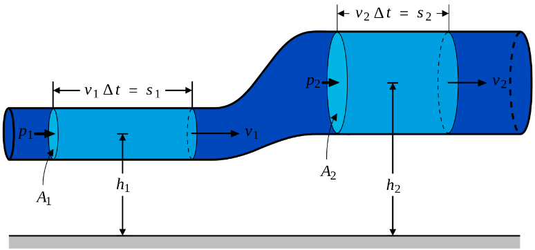
Condiciones de aplicación
Bernoulli se usa de forma directa cuando el fluido puede considerarse incompresible, el régimen es estacionario y las pérdidas por rozamiento son despreciables. En problemas reales de tuberías largas, codos y válvulas hay que añadir pérdidas de carga.
Si los dos puntos están a la misma altura, se cancelan los términos ρgh.
Conclusión física importante: donde la tubería se estrecha, la velocidad aumenta y la presión disminuye.
Las tres formas de la ecuación de Bernoulli
La misma ecuación admite tres expresiones equivalentes según las unidades en que se escriban sus términos. Las tres son correctas y se elige la que resulte más cómoda según el problema.
Cada término es una energía en julios. Útil conceptualmente para visualizar la conservación de la energía mecánica del fluido; menos práctica para el cálculo directo.
Es la forma desarrollada al inicio de la sección. Términos: presión estática, presión hidrostática y presión dinámica.
Cada término tiene unidades de metros (de columna de líquido):
· \(\dfrac{p}{\rho g}\): altura de presión o carga de presión (m)
· \(h\): altura geométrica o cota (m)
· \(\dfrac{v^2}{2g}\): altura de velocidad o carga de velocidad (m)
La suma de las tres alturas se denomina carga total o altura manométrica:
Esta \(H\) es la altura manométrica que aparece en las fórmulas de potencia de la bomba (\(P_B = \rho g H Q / \eta\)) y de la turbina (\(P_T = \eta \rho g H Q\)) de la sección 10. Representa la energía mecánica que la bomba entrega al fluido (o que el fluido cede a la turbina) expresada como una altura de columna de líquido.
Cuando hay rozamientos, parte de la energía mecánica se disipa.
p.c. = pérdidas de carga. En la práctica, siempre reducen la energía disponible aguas abajo.
Si el enunciado te dice que el conducto se estrecha y además los puntos están a la misma altura, piensa en cadena: continuidad → aumenta v → Bernoulli → disminuye p. Esa secuencia explica el efecto Venturi, los pulverizadores y otros muchos fenómenos.
Tubo Venturi
Contracción gradual + expansión: al reducirse la sección, el fluido acelera y su presión disminuye (Bernoulli). Midiendo Δp se calcula el caudal.
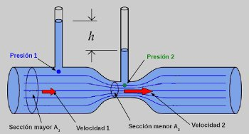
Manómetro diferencial
Mide Δp usando un líquido manométrico (ρm) más denso que el fluido principal (ρf).
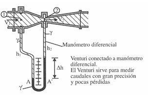
Manómetro diferencial
El manómetro diferencial mide la diferencia de presión entre dos puntos de una instalación. Contiene un líquido manométrico de densidad ρm mayor que la del fluido principal ρf, habitualmente mercurio. La diferencia de presión se obtiene igualando presiones en un mismo plano horizontal, normalmente el punto más bajo de la columna manométrica.
Desde el punto 1 bajamos por una columna del fluido principal hasta el plano de referencia A, y desde el punto 2 bajamos por su rama hasta el punto A′. Como A y A′ están al mismo nivel dentro del mismo líquido manométrico, sus presiones son iguales:
Expresando cada una de esas presiones por hidrostática:
Despejando la diferencia de presión entre los puntos 1 y 2:
\(h_1\) y \(h_2\): cotas de los puntos de toma respecto al plano de referencia · \(\Delta h\): diferencia de alturas entre las dos columnas del líquido manométrico
\(\Delta h\): diferencia de altura entre columnas (m) · \(\rho_m\): densidad del líquido manométrico (Hg: 13 600 kg/m³) · \(\rho_f\): densidad del fluido en la tubería (agua: 1 000 kg/m³)
La ecuación de Torricelli es un caso particular de Bernoulli para el vaciado de un depósito por un orificio. Relaciona la velocidad de salida con la altura de líquido sobre el agujero.
v: velocidad de salida (m/s) · h: altura de la superficie libre sobre el orificio (m) · g = 9,81 m/s²
La velocidad de salida no depende del volumen total del depósito, sino de la altura h del líquido sobre el orificio. Cuanto mayor es esa altura, mayor es la energía potencial disponible y, por tanto, mayor será la velocidad de salida.
La expresión se parece a la de caída libre porque, idealmente, la energía potencial \(\rho g h\) se transforma en energía cinética \(\tfrac{1}{2}\rho v^2\).

Se aplica Bernoulli entre dos puntos:
Sustituyendo las condiciones del problema:
Las presiones atmosféricas se cancelan y queda:
Dividiendo entre ρ y despejando la velocidad:
El número de Reynolds es un parámetro adimensional que permite determinar el régimen de circulación de un fluido.
Re < 2000 → régimen laminar · 2000–4000 → régimen transitorio · Re > 4000 → régimen turbulento.
Viscosidad: resistencia interna de un fluido al movimiento o al deslizamiento entre sus capas.
Viscosidad dinámica μ: mide la resistencia al deslizamiento entre capas. Unidad: Pa·s.
Viscosidad cinemática ν: cociente entre viscosidad dinámica y densidad. Unidad: m²/s.
Número de Reynolds
μ: viscosidad dinámica (Pa·s) · ν = μ/ρ: viscosidad cinemática (m²/s) · D: diámetro tubería (m)
| Régimen | Valor de Re | Descripción |
|---|---|---|
| Laminar | Re < 2 000 | Capas paralelas, flujo ordenado. Pérdidas ∝ v. |
| Transición | 2 000 ≤ Re ≤ 4 000 | Inestable: puede ser laminar o turbulento. |
| Turbulento | \(\mathrm{Re} > 4\,000\) | Mezcla caótica. Pérdidas \(\propto v^2\). |
Potencia hidráulica
\(P_h\) (W) · \(p\): presión (Pa) · \(Q\): caudal (m³/s)
Bomba
Recibe energía de un motor y la transfiere al fluido, aumentando su presión.
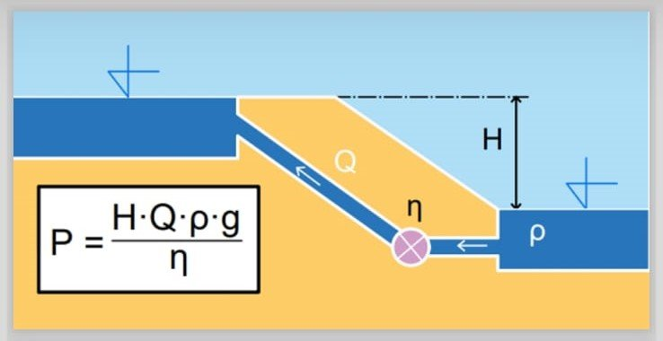
\(H\): altura manométrica (m) · \(\eta\): rendimiento (\(< 1\))
Turbina
El fluido cede energía al rotor → potencia mecánica. Entrega menos de lo que contiene el fluido.
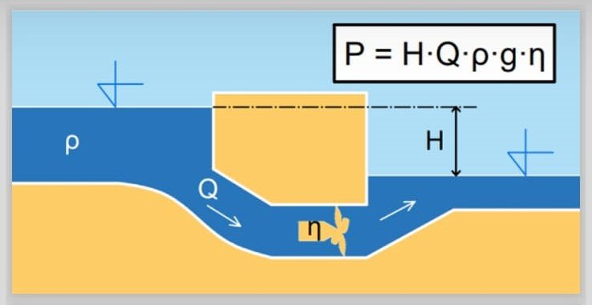
· Bomba → consume energía → \(P_B = \dfrac{p \cdot Q}{\eta}\) (divide entre \(\eta\))
· Turbina → genera energía → \(P_T = \eta \cdot p \cdot Q\) (multiplica por \(\eta\): produce MENOS)
La oleohidráulica usa aceite mineral a presión para transmitir energía. Mismos principios que la neumática pero con líquido incompresible → mayor precisión y presión.
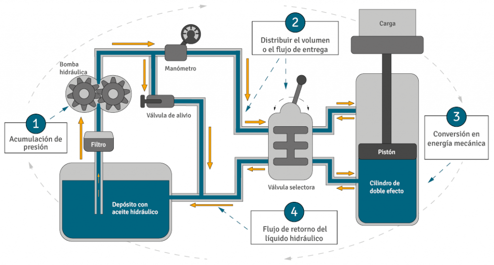
Elementos del circuito
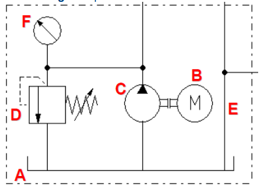
Bombas hidráulicas
Volumétricas (desplazamiento positivo): émbolo alternativo, engranajes, paletas, tornillos. Mucha presión, poco caudal. No conectar con fluido bloqueado.
Rotodinámicas (turbobombas): rotor con álabes → energía cinética → presión (difusor). Centrífugas, axiales, heliocentrífugas. Más caudal, menos presión. Se pueden conectar con fluido bloqueado.
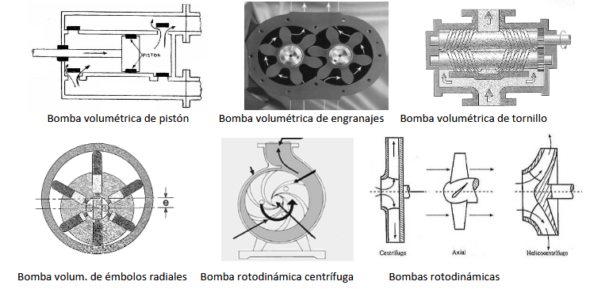
Las válvulas hidráulicas controlan el paso del aceite en el circuito. Permiten dirigir el fluido, regular la presión y controlar la velocidad de los actuadores.
Válvulas distribuidoras: dirigen el flujo hacia una u otra parte del circuito. En hidráulica son habituales las 4/2 y 4/3. A diferencia de la neumática, el retorno se hace al depósito y no a la atmósfera.
Válvulas limitadoras de presión: protegen el circuito frente a sobrepresiones, derivando aceite al depósito cuando se supera el valor fijado.
Válvulas reguladoras de caudal: estrangulan el paso del fluido para controlar la velocidad del actuador, con más precisión que en neumática.
Los actuadores hidráulicos transforman la energía hidráulica del aceite en movimiento.
Cilindro hidráulico: transforma energía hidráulica en movimiento lineal y desarrolla grandes fuerzas. La fuerza básica se obtiene con \(F = p \cdot S\).
Motor hidráulico: transforma energía hidráulica en movimiento rotativo y genera par motor.
Frente a los actuadores neumáticos, los hidráulicos proporcionan mayor fuerza y mayor precisión, aunque son más caros y complejos.
Componentes básicos: depósito de aceite, bomba hidráulica, motor eléctrico, válvula limitadora de presión, válvula distribuidora, conductos, filtro y actuador.
Funcionamiento general: el motor acciona la bomba, la bomba aspira aceite del depósito, lo impulsa a presión hacia el circuito, la válvula distribuidora dirige el caudal al actuador y el aceite retorna de nuevo al depósito.
Diferencias fundamentales con la neumática: en hidráulica el fluido es aceite, trabaja a presiones mucho mayores, el fluido es prácticamente incompresible y el circuito es cerrado porque el aceite retorna al depósito. En neumática se trabaja con aire comprimido, el circuito es abierto y el aire se expulsa a la atmósfera.
Ventajas de la hidráulica
- Grandes fuerzas.
- Alta precisión y control.
- Movimiento suave y uniforme.
Ventajas de la neumática
- Simplicidad.
- Rapidez.
- Menor coste y mantenimiento.
Inconvenientes de la hidráulica
- Mayor coste.
- Fugas de aceite.
- Circuito más complejo.
Inconvenientes de la neumática
- Menor fuerza.
- Menor precisión.
- Aire compresible y peor control.
Válvulas hidráulicas
Es aplicable lo visto en neumática, con estas diferencias:
- El mando neumático se cambia por mando hidráulico.
- La posición de reposo suele ser la derecha (no la izquierda).
- De las válvulas de bloqueo, solo la antirretorno se usa habitualmente.
- Las válvulas de presión son más importantes (presiones mayores).
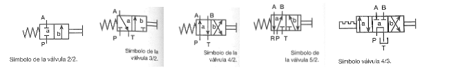
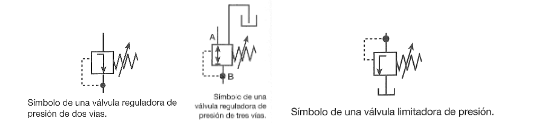
Actuadores hidráulicos
Trabajan a mayor presión que los neumáticos. Al usar líquido incompresible son mucho más precisos (se puede detener el cilindro en una posición determinada).
- Cilindros hidráulicos: SE y DE. Carrera mayor que en neumática. SE: levantar, bajar, sujetar. DE: vaivén con trabajo en ambos sentidos.
- Motores hidráulicos: de engranajes, paletas, émbolos. Para vehículos, maquinaria pesada, prensas, laminadoras.
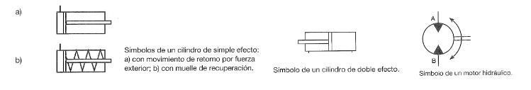
Circuitos de aplicación
Circuito 1: Válvula 3/2 + cilindro DE
- Solo controla un sentido del movimiento.
- Reposo: vía A conecta a retorno (T), presión (P) bloqueada.
- Accionamiento: P conecta A → vástago sale.
- Limitación: para invertir hay que reconectar.
Circuito 2: Válvula 4/2 + cilindro DE
- Control bidireccional completo.
- Reposo: P→B (vástago retraído).
- Acción: P→A, B→retorno (vástago sale).
- Retorno automático al soltar.
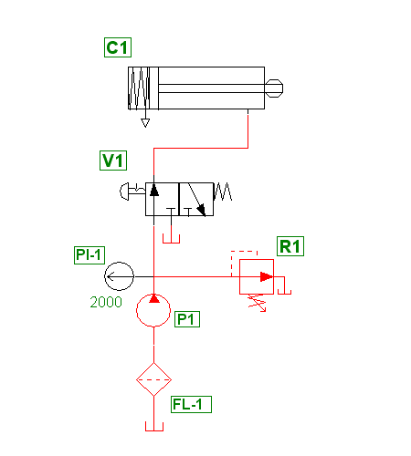
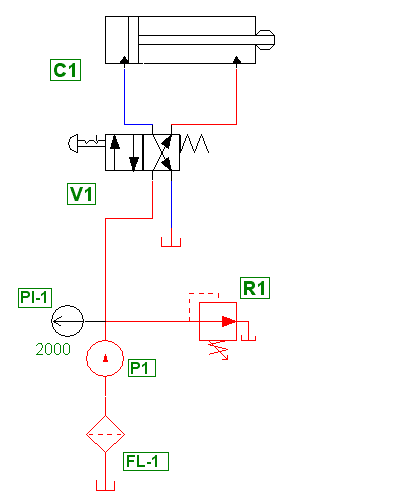
💧 Árbol de decisión hidráulica
| Situación física | Relación principal | Comprobación |
|---|---|---|
| Fluido en reposo | Hidrostática | Profundidad, densidad y presión |
| Dos pistones conectados | Principio de Pascal | Igualdad de presiones |
| Cambio de sección en una conducción | Continuidad | Caudal constante |
| Presión, velocidad y altura | Bernoulli | Conservación de energía por unidad de volumen |
| Estrechamiento con manómetro | Venturi | Relación entre caída de presión y velocidad |
| Bomba o turbina | Potencia hidráulica | Caudal, salto de presión y rendimiento |
Plantilla de Bernoulli en forma de presiones
- Elegir los puntos 1 y 2 en la misma línea de corriente.
- Escribir todos los términos antes de anular ninguno.
- Eliminar únicamente los términos justificados: misma altura, depósito grande, presión atmosférica, etc.
- Resolver la incógnita y comprobar unidades: Pa, m/s, m³/s, W.
💧 Problemas hidráulicos completos: comprobaciones finales
| Problema | Ecuación principal | Dato crítico | Error habitual |
|---|---|---|---|
| Prensa hidráulica | F₁/S₁ = F₂/S₂ | Usar áreas, no diámetros | Olvidar elevar el diámetro al cuadrado |
| Continuidad | Q = S·v | Sección en m² | Usar cm² sin convertir |
| Bernoulli | p + ½ρv² + ρgz = constante | Puntos 1 y 2 bien elegidos | Anular términos sin justificar |
| Venturi | Continuidad + Bernoulli | Diferencia de presión | Confundir presión absoluta y manométrica |
| Potencia hidráulica | P = Δp·Q | Q en m³/s | Usar L/min directamente |
Formato recomendado de solución con Bernoulli
- Escribir Bernoulli completa en forma de presiones.
- Indicar hipótesis: régimen estacionario, fluido ideal, misma línea de corriente.
- Justificar qué términos se cancelan.
- Resolver con unidades SI.
- Interpretar el resultado: presión, velocidad, caudal o potencia.
🎯 Mini-test de autoevaluación
5 preguntas tipo PAU. Pulsa la opción que consideres correcta y se mostrará la respuesta.
1. El principio de Pascal afirma que:
2. Una prensa hidráulica con S₁ y S₂ multiplica las fuerzas según:
3. La ecuación de continuidad para flujo incompresible es:
4. En un Venturi, donde la sección se reduce:
5. La ecuación de Bernoulli, en forma de presiones, contiene:
📝 Decálogo PAU 2025-26
- Pascal en prensa: \(\dfrac{F_1}{S_1} = \dfrac{F_2}{S_2}\). El fluido transmite presión, no fuerza.
- Continuidad: \(Q = A\cdot v = \text{cte}\). Si reduces sección, aumenta velocidad. Distingue Q (caudal) con q (calor).
- Bernoulli en tres términos: \(\dfrac{v^2}{2g} + \dfrac{p}{\rho g} + z = \text{cte}\) (expresado en altura) o bien \(\dfrac{1}{2}\rho v^2 + p + \rho g z = \text{cte}\).
- Unidades: 1 bar = \(10^5\) Pa; 1 atm \(\approx\) 101325 Pa. Trabaja en SI (Pa) antes de sustituir.
- Densidad del agua: \(\rho = 1000\) kg/m\(^3\); del aceite hidráulico \(\approx 850\) kg/m\(^3\). No confundas.
- Arquímedes: \(E = \rho_f\cdot g\cdot V_{sumergido}\). Usa densidad del fluido, no del cuerpo.
- Efecto Venturi: al estrechar, v aumenta y p disminuye (por Bernoulli). Útil para medir caudal.
- Torricelli: \(v = \sqrt{2gh}\). Velocidad de salida por un orificio a profundidad h.
- Potencia hidráulica: \(P = p\cdot Q = \rho g h\cdot Q\). Verifica unidades (Pa·m\(^3\)/s = W).
- En prensa, aunque la fuerza se multiplica, el trabajo se conserva: el émbolo grande recorre menos distancia (\(F_1 d_1 = F_2 d_2\)).
Auditoría técnica final · Bernoulli, Venturi y potencia hidráulica
Se añade una comprobación de unidades y términos para cerrar los problemas de hidráulica sin errores de criterio.
| Término | Unidad | Significado | Cuándo puede anularse |
|---|---|---|---|
| p | Pa | Presión estática | Nunca por sistema; solo si se trabaja con presión relativa y el punto está a atmósfera. |
| 1/2·ρ·v² | Pa | Presión dinámica | Si la velocidad es despreciable. |
| ρ·g·z | Pa | Término de altura | Si ambos puntos están a la misma cota. |
- Elegir dos puntos de la misma línea de corriente.
- Escribir Bernoulli completo antes de simplificar.
- Usar continuidad si cambian las secciones.
- Comprobar unidades: Pa, m/s, kg/m³, m.
- Interpretar si el resultado es presión, velocidad, caudal o potencia.